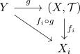

Subbasis einer Initialtopologie
Satz
Sei $X$ eine Menge, $(X_i,\mathcal{T}_i)$ eine Klasse von
Beweis
Basis
Sei $f_i: X \rightarrow X_i$ stetig, so gilt für eine offene Menge $O_i \in \mathcal{T}_i$, dass das Urbild $f^{-1}_i[O_i]$ ebenfalls offen ist. Zu den Bedingungen für eine Basis einer Topologie: Es gilt $X = f_i^{-1}[X_i]$, d.h. $x$ ist offen in der induzierten topologie. Ferner gilt nach Konstruktion, dass der endliche Durchschnitt enthalten ist, und damit insbesondere auch eine Vereinigung
Subbasis
folgt aus der Definition, da eine Basis als Subbasis
universelle Eigenschaft
Sei $(Y, \mathcal{T}_Y$ eine Topologie und $g: Y \rightarrow X$ eine Abbildung:

Falls $g$ stetig ist, folgt aus der Komposition stetiger Abbildungen, dass $f_i \circ g$ stetig ist. Sei $f_i \circ g$ stetig, so zeigen wir nach der Aussage, dass das Urbild der Subbasis offen ist. Sei $A \in \mathcal{S}$, d.h. $A = f_i^{-1}[O_i]$ für ein offenes $O_i$, dann folgt
Wegen der stetigkeit von $f_i \circ g$ folgt damit, dass $(f_i \circ g)^{-1}[O_i]$ und damit auch $g^{-1}[A]$ offen ist, d.h. $g$ ist stetig
wohldefiniert
folgt aus dem axiom schema of specification